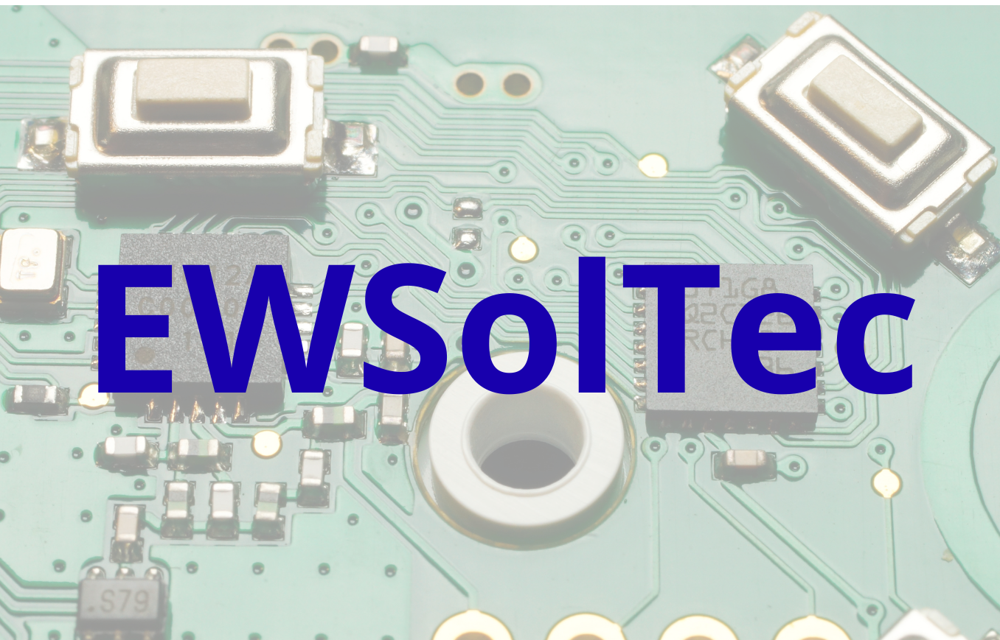

🖥️
Hardware
Diagnóstico de equipamiento y estaciones de trabajo. Asesoramiento en actualizaciones, compras y procesos de migración.

Diagnóstico y Asesoramiento Tecnológico
Con más de 35 años de experiencia en el área de tecnología de la información, brindo asistencia a PyMEs y profesionales para relevar el estado de su infraestructura tecnológica. El objetivo es proporcionar diagnósticos claros para evitar pérdidas de tiempo y asegurar que la tecnología acompañe el crecimiento de su negocio.
Diagnóstico de equipamiento y estaciones de trabajo. Asesoramiento en actualizaciones, compras y procesos de migración.
Relevamiento de conectividad y soluciones para un entorno de trabajo estable y libre de interrupciones.
Asesoramiento en herramientas de gestión y optimización para mejorar la productividad operativa.